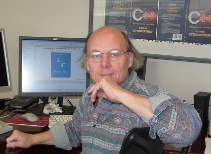
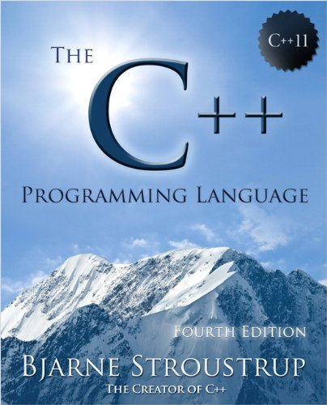
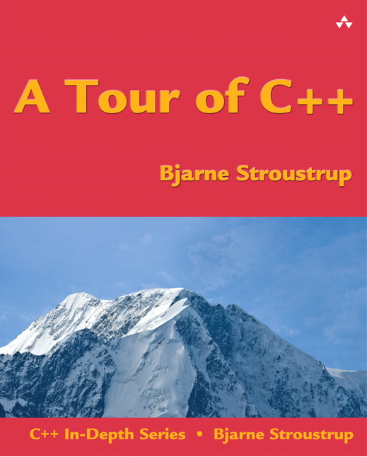

A Tour of C艹
by Bjarne Stroustrup
C艹11 feels like a new language. I write code differently now than I did in C艹98. The C艹11 code is shorter, simpler, and usually more efficient than what I used to write.
This poses challenges: How do you present C艹? What techniques do you recommend? What language features and libraries do you emphasize? Presenting C艹11 as a layer on top of C艹98 would be as bad as representing C艹98 as a layer on top of C. C艹 must be presented as a whole, as the powerful tool for design and implementation that it is, rather than a set of independent features.
The Fourth Edition of The C艹 Programming Language attempts that and should become available in a few months. To help people get started with C艹11 and with TC艹PL4, I summarize C艹11 in four chapters, collectively named A Tour of C艹. Addison-Wesley graciously allowed me to post drafts of these chapters. I will do so over the next months.
TC艹PL4 is not a work of science fiction. All features presented are available in one or more currently shipping C艹 compilers. All C艹 compiler purveyors are hard at work completing their C艹11 support.
The “Tour” is a tour of ISO Standard C艹, rather than a tour of what’s new in C艹11 or a tour of your favorite C艹 implementation. Also, the tour assumes some familiarity with programming; it is not written for complete novices.
Constructive feedback is most welcome.
- Bjarne Stroustrup (November 2012)
P.S. For a list of new features in C艹11, see my C艹11 FAQ. Of course, TC艹PL4 has such a list, but it is not part of the tour.
Take the Tour
- Part 1: The Basics
- Part 2: Abstraction Mechanisms
- Part 3: Containers and Algorithms
- Part 4: Concurrency and Utilities
The Tour is now also available in book form; see cover image at right.
Preface to The C艹 Programming Language, 4th Ed.
[Added March 2013: The Preface to Stroustrup's TC艹PL4e mentioned above is now available and reproduced here with permission.]
All problems in computer science can be solved by another level of indirection, except for the problem of too many layers of indirection.
— David J. Wheeler
C艹 feels like a new language. That is, I can express my ideas more clearly, more simply, and more directly in C艹11 than I could in C艹98. Furthermore, the resulting programs are better checked by the compiler and run faster.
In this book, I aim for completeness. I describe every language feature and standard-library component that a professional programmer is likely to need. For each, I provide:
- Rationale: What kinds of problems is it designed to help solve? What principles underlie the design? What are the fundamental limitations?
- Specification: What is its definition? The level of detail is chosen for the expert programmer; the aspiring language lawyer can follow the many references to the ISO standard.
- Examples: How can it be used well by itself and in combination with other features? What are the key techniques and idioms? What are the implications for maintainability and performance?
The use of C艹 has changed dramatically over the years and so has the language itself. From the point of view of a programmer, most of the changes have been improvements. The current ISO standard C艹 (ISO/IEC 14882:2011, usually called C艹11) is simply a far better tool for writing quality software than were previous versions. How is it a better tool? What kinds of programming styles and techniques does modern C艹 support? What language and standard-library features support those techniques? What are the basic building blocks of elegant, correct, maintainable, and efficient C艹 code? Those are the key questions answered by this book. Many answers are not the same as you would find with 1985, 1995, or 2005 vintage C艹: progress happens.
C艹 is a general-purpose programming language emphasizing the design and use of type-rich, lightweight abstractions. It is particularly suited for resource-constrained applications, such as those found in software infrastructures. C艹 rewards the programmer who takes the time to master techniques for writing quality code. C艹 is a language for someone who takes the task of programming seriously. Our civilization depends critically on software; it had better be quality software.
There are billions of lines of C艹 deployed. This puts a premium on stability, so 1985 and 1995 C艹 code still works and will continue to work for decades. However, for all applications, you can do better with modern C艹; if you stick to older styles, you will be writing lower-quality and worse-performing code. The emphasis on stability also implies that standards-conforming code you write today will still work a couple of decades from now. All code in this book conforms to the 2011 ISO C艹 standard.
This book is aimed at three audiences:
- C艹 programmers who want to know what the latest ISO C艹 standard has to offer,
- C programmers who wonder what C艹 provides beyond C, and
- People with a background in application languages, such as Java, C#, Python, and Ruby, looking for something “closer to the machine” -- something more flexible, something offering better compile-time checking, or something offering better performance.
Naturally, these three groups are not disjoint -- a professional software developer masters more than just one programming language.
This book assumes that its readers are programmers. If you ask, “What’s a for-loop?” or “What’s a compiler?” then this book is not (yet) for you; instead, I recommend my Programming: Principles and Practice Using C艹 to get started with programming and C艹. Furthermore, I assume that readers have some maturity as software developers. If you ask “Why bother testing?” or say, “All languages are basically the same; just show me the syntax” or are confident that there is a single language that is ideal for every task, this is not the book for you.
What features does C艹11 offer over and above C艹98? A machine model suitable for modern computers with lots of concurrency. Language and standard-library facilities for doing systemslevel concurrent programming (e.g., using multicores). Regular expression handling, resource management pointers, random numbers, improved containers (including, hash tables), and more. General and uniform initialization, a simpler for-statement, move semantics, basic Unicode support, lambdas, general constant expressions, control over class defaults, variadic templates, user-defined literals, and more. Please remember that those libraries and language features exist to support programming techniques for developing quality software. They are meant to be used in combination -- as bricks in a building set -- rather than to be used individually in relative isolation to solve a specific problem. A computer is a universal machine, and C艹 serves it in that capacity. In particular, C艹’s design aims to be sufficiently flexible and general to cope with future problems undreamed of by its designers.
Acknowledgments
In addition to the people mentioned in the acknowledgment sections of the previous editions, I would like to thank Pete Becker, Hans-J. Boehm, Marshall Clow, Jonathan Coe, Lawrence Crowl, Walter Daugherty, J. Daniel Garcia, Robert Harle, Greg Hickman, Howard Hinnant, Brian Kernighan, Daniel Krügler, Nevin Liber, Michel Michaud, Gary Powell, Jan Christiaan van Winkel, and Leor Zolman. Without their help this book would have been much poorer.
Thanks to Howard Hinnant for answering many questions about the standard library.
Andrew Sutton is the author of the Origin library, which was the testbed for much of the discussion of emulating concepts in the template chapters, and of the matrix library that is the topic of Chapter 29. The Origin library is open source and can be found by searching the Web for “Origin” and “Andrew Sutton.”
Thanks to my graduate design class for finding more problems with the “tour chapters” than anyone else.
Had I been able to follow every piece of advice of my reviewers, the book would undoubtedly have been much improved, but it would also have been hundreds of pages longer. Every expert reviewer suggested adding technical details, advanced examples, and many useful development conventions; every novice reviewer (or educator) suggested adding examples; and most reviewers observed (correctly) that the book may be too long.
Thanks to Princeton University’s Computer Science Department, and especially Prof. Brian Kernighan, for hosting me for part of the sabbatical that gave me time to write this book.
Thanks to Cambridge University’s Computer Lab, and especially Prof. Andy Hopper, for hosting me for part of the sabbatical that gave me time to write this book.